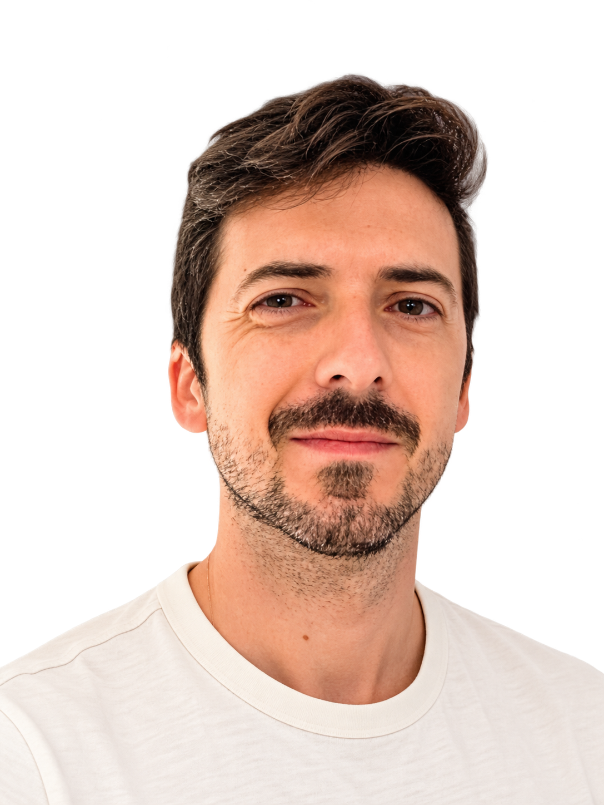

Microsoft 365 e identidad
Administración de usuarios, grupos, licencias y herramientas de colaboración. Identidad y acceso como base del entorno de trabajo.
Ver administración y automatización ↓Responsable TIC · Valencia
Organizo y gestiono la tecnología para que las personas puedan centrarse en su trabajo.
Valencia, España · Infraestructura y estrategia tecnológica

01 · Perfil
Mi trabajo conecta la infraestructura técnica con las necesidades de una organización: desde la red y los dispositivos hasta la seguridad, el soporte y la adopción de nuevas herramientas.
Soy responsable TIC en el Colegio Nuestra Señora del Pilar de Valencia. Combino la administración de sistemas con la planificación tecnológica y la atención a docentes, alumnado y personal del centro.
Durante dos años impartí docencia en programación, redes, sistemas e inteligencia artificial. Esa experiencia complementa mi perspectiva: entender la tecnología también significa saber explicarla.
02 · Especialización
Áreas que se complementan para mantener un entorno tecnológico coherente.
Administración de usuarios, grupos, licencias y herramientas de colaboración. Identidad y acceso como base del entorno de trabajo.
Ver administración y automatización ↓Preparación, despliegue y gestión de equipos Windows. Configuraciones y aplicaciones adaptadas a cada grupo de usuarios.
Ver gestión de dispositivos ↓Diseño y administración de conectividad, segmentación de red, Wi-Fi corporativo y políticas de seguridad perimetral.
Ver organización de la red ↓Scripts para simplificar tareas de administración y experiencia docente en programación, sistemas e inteligencia artificial.
Ver automatización en la práctica ↓03 · Trayectoria
Gestión de infraestructura, sistemas, redes y Microsoft 365. Definición de la arquitectura tecnológica, políticas de seguridad y soporte a la comunidad educativa.
Impartí durante dos años materias de programación, redes, sistemas informáticos e inteligencia artificial aplicada.
Gestión de infraestructura tecnológica y acompañamiento a la transformación digital del centro.
Redacción de artículos sobre diseño web, experiencia de usuario (UX/UI), tendencias digitales y herramientas creativas para una comunidad internacional de diseñadores y desarrolladores. Investigación de tendencias y colaboración con el equipo editorial en la planificación y revisión de contenidos.
04 · Proyectos
Una selección de líneas de trabajo en el entorno educativo.
El contexto. Un entorno educativo 1:1 con equipos de alumnado, docentes y aulas, cada uno con necesidades de uso y administración diferentes.
El reto. Preparar los dispositivos de forma coherente y adaptar las aplicaciones y configuraciones a cada grupo de usuarios.
Mi aportación. Configuración de Intune y Autopilot, despliegue de aplicaciones y definición de políticas para los equipos Windows.
El resultado. Equipos administrados de forma centralizada, con aplicaciones y configuraciones asignadas según su uso en el centro.
El contexto. Una infraestructura compartida por la comunidad educativa, los servicios del centro y equipos como impresoras y sistemas audiovisuales.
El reto. Organizar la conectividad y separar entornos con necesidades de acceso distintas.
Mi aportación. Diseño de la segmentación mediante VLAN, administración de switches y puntos de acceso Aruba, y configuración del firewall SonicWall.
El resultado. Una red organizada en segmentos para usuarios y servicios, con políticas de acceso diferenciadas y una gestión específica de la infraestructura.
El contexto. La administración cotidiana de Microsoft 365 y de los dispositivos incluye tareas que se repiten sobre usuarios, grupos y configuraciones.
El reto. Aplicar cambios de manera coherente y facilitar las operaciones recurrentes.
Mi aportación. Desarrollo y uso de scripts PowerShell y Microsoft Graph para administrar usuarios, grupos, licencias y configuraciones.
El resultado. Tareas recurrentes resueltas mediante scripts reutilizables, que permiten aplicar cambios sobre conjuntos de usuarios o dispositivos.
Contacto
Para conversar sobre tecnología, educación
y oportunidades profesionales.